My Summer as a NASA Intern
NASA GSFC Virtual Intern Symposium Presentation
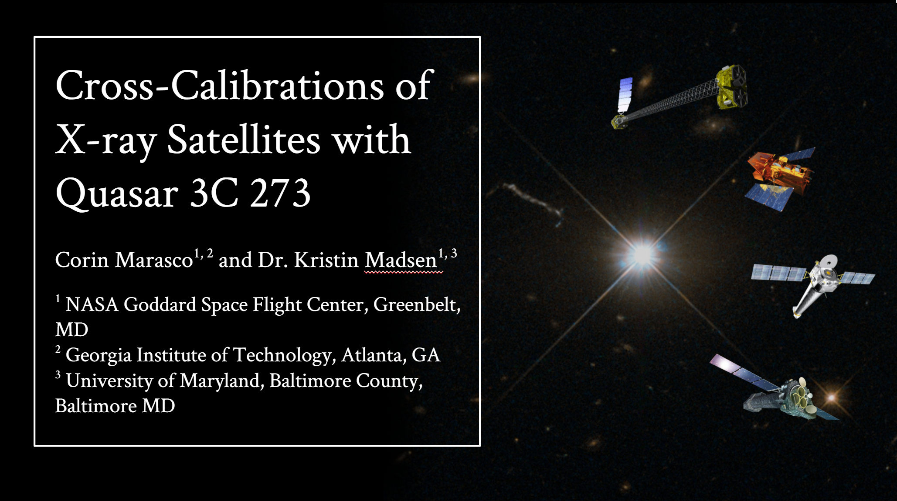
- Hello! My name is Corin Marasco, I’m a physics major at Georgia Tech, and this summer I worked with
Dr. Kristin Madsen in the X-ray astrophysics lab on cross-calibrations of x-ray satellites using the
quasar 3C 273!
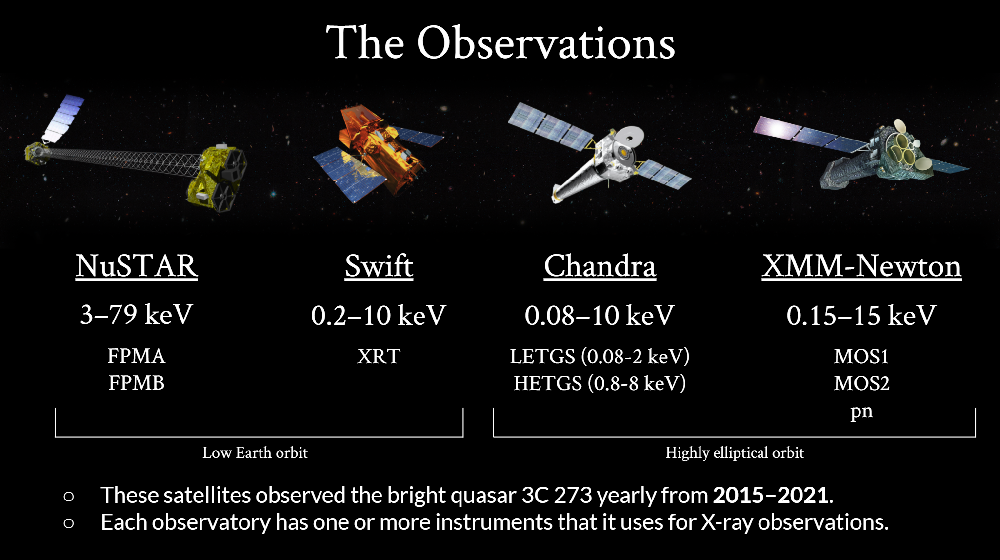
- Here are the four satellites we cross-calibrated. They all observed the quasar 3C 273 from 2015-2021,
and we have analyzed the data from all seven years for a more accurate cross-calibration analysis.
- The satellites we used are NuSTAR, Swift, Chandra, and XMM-Newton.
- NuSTAR observes in by far the hardest X-ray band out of these four observatories, from 3-79 keV.
However, unlike the other three, it does not operate in the soft X-ray band below 3 keV. It has
two theoretically identical instruments that it uses for observations, FPMA and FPMB, which were
analyzed separately in this study.
- Swift is a multiwavelength observatory which houses an X-ray telescope called XRT that operates
in about the 0.2-10 keV band. Swift XRT collects data through two modes, photon counting and windowed
timing. For our analysis, we used the windowed timing data because it was available for every observation.
- Chandra observes in the 0.08-10 keV band using two grating spectrometers: LETGS and HETGS. They
observe in different X-ray bands for better overall resolution. In order to match the bands from
other observatories, just the data from HETGS was used.
- Our last satellite, XMM-Newton, observes in the 0.15-15 keV band. It houses three instruments that
it uses for X-ray observations, MOS1 and MOS2, which are theoretically identical, and pn, which
uses different gratings for collection. These instruments were analyzed separately in this study.
- Lastly, these satellites have different orbits, influencing their collection data. NuSTAR and Swift
have a low Earth orbit, while Chandra and XMM have highly elliptical orbits.
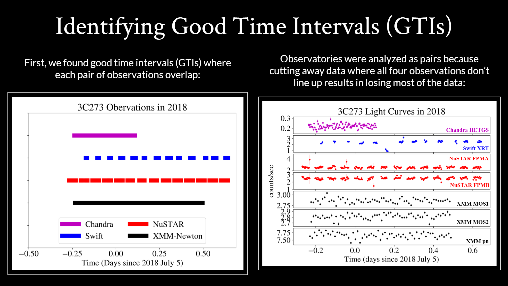
- Good time intervals or GTIs are periods of time when the observatory was collecting usable data.
- To compare the observational data between observatories, we first found good time intervals
where the observations overlapped.
- Like I mentioned in the last slide, NuSTAR and Swift have low earth orbits, which causes them to
have these short GTI spans as the Earth gets in the way of the target. Chandra and XMM are
uninterrupted because their orbit allows them to swing out far from the Earth and collect data
for longer periods of time.
- For better accuracy, the satellites were compared and analyzed as pairs instead of limiting our
study to the short periods of time where all four GTIs overlap.
- The lightcurve on the right shows the counts per second collected by each satellite in 2018.
- As you can see in the lightcurves, there is a lot of data that occurs outside the short
spans where all four observations overlap, and some of that might be worth including, like
the dip in the blue Swift data.
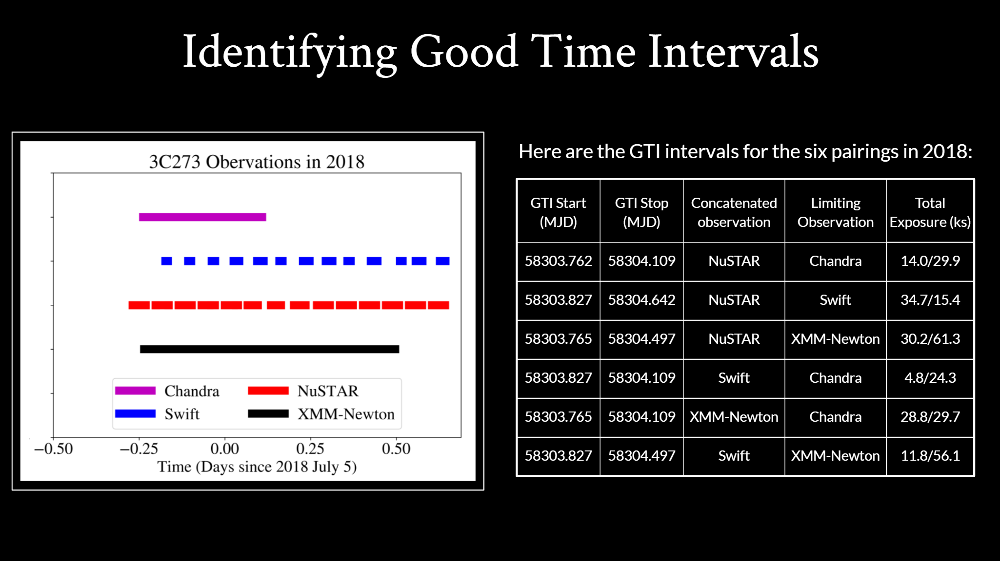
- This table details the GTIs shown in the plot on the left.
- Because we analyzed the satellites in pairs, we identified six GTI intervals for every year.
The six for 2018 are listed here.
- You can see how much more of the exposure time we get to use when we compare the satellites
in pairs. Instead of using just 14,000 seconds of NuSTAR data because it’s limited by Chandra,
we can use 35,000 seconds when it’s compared to Swift and 30,000 when compared with XMM-Newton.
- So comparing the satellites in pairs allows us to use more of the collected data and hopefully
obtain a more accurate cross-calibration.
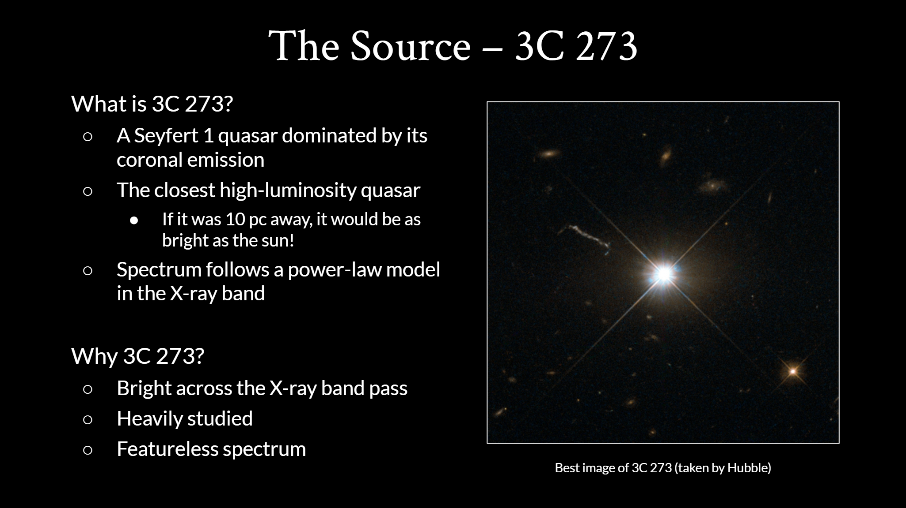
- Before we look at the collected data, let's talk about the source we used.
- 3C 273 is a Seyfert 1 quasar dominated by its coronal emission.
- A quasar is a very bright active galactic nuclei, and, similar
to the sun, it has a corona
and its corona is the primary source of its x-ray emission.
- 3C 273 the closest high-luminosity quasar, and was the first quasar ever detected.
- It’s so bright that if it was as far as 10 parsecs away, it
would be as bright as the sun!
- Its spectrum is dominated by a power-law model in the X-ray band that we examined.
- We use 3C 273 for cross-calibration because it is very bright across the X-ray band,
it has been heavily studied, and it’s spectrum is very featureless, so it’s easier
to fit a model to.
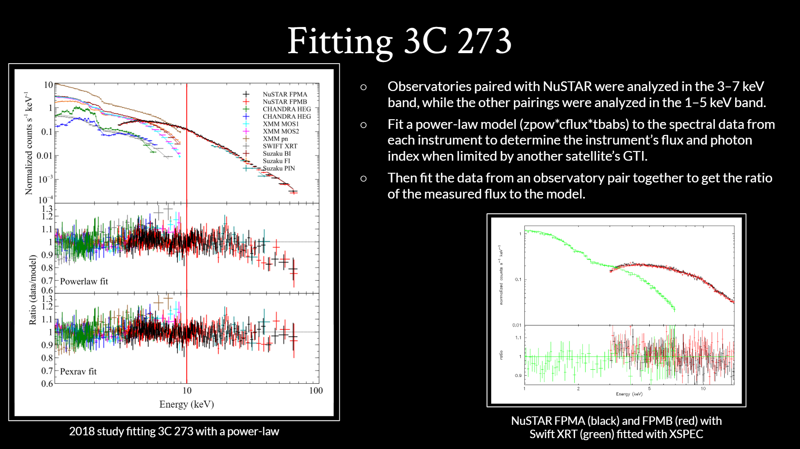
- For each of the six satellite pairs, we fit a power-law model to the data.
- Because of NuSTARs harder energy band, the three pairings that involved NuSTAR were
analyzed in the 3-7 keV band, and the other three pairings without NuSTAR were analyzed
in the 1-5 keV band.
- We used a power-law model because, as shown in the ratio plot in the figure on the
left, the power-law fit describes 3C 273 very well. Because we only analyzed data
in the 1-10 keV range, the power law accurately fits the energy range our study
focuses on, even though there’s a dip in the end of the plot.
- For each satellite pairing, we first fit the model to the spectrum from each
instrument separately to determine the photon index and flux within that GTI.
- Then, as shown in the picture below with Swift and NuSTAR, we fit the data from
all instruments in the observatory pair together to get the ratio of the measured
flux to the model flux.
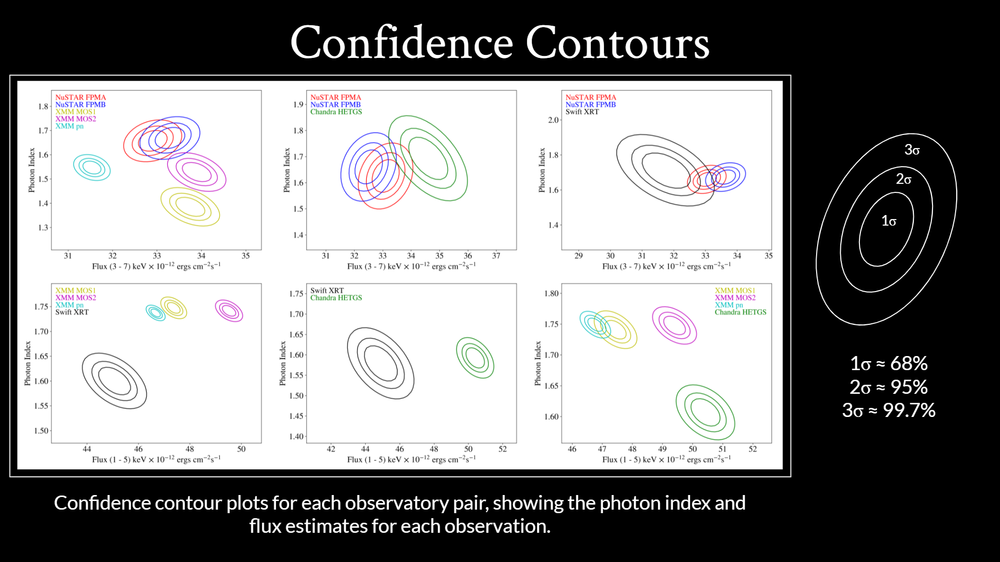
- Here are the estimates for the flux and photon index values for each satellite
pair that was fitted in 2018. These confidence contours show the range we expect
the flux and photon index to be in.
- The actual photon index and flux value is most likely (68%) to be in the
centermost oval, it is probably within the 2nd oval (95%), and almost certainly
within the outermost.
- We created these confidence contours because they are a useful way to visualize
how much agreement there is between observatories.
- If they overlap, like NuSTAR and Chandra in the center
of the top row, those satellites are more likely to agree with each other.
- If the contours don’t touch each other, like Swift and
XMM or Swift and Chandra in the bottom row, we can deduce that the satellites
do not agree with each other.
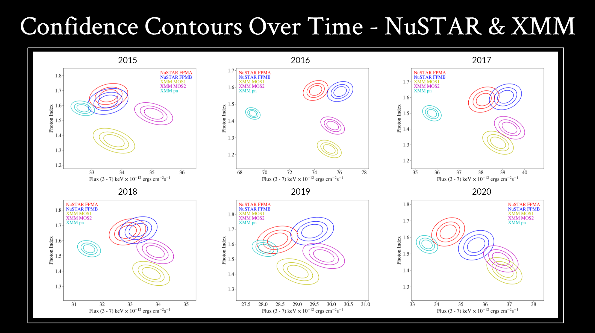
- These are the NuSTAR and XMM confidence contours for all six years of data
(the 2021 data isn’t included because it isn’t available yet for XMM).
- Here, we can see trends and notable changes by comparing confidence contours
over time.
- Looking at these, we see that there is typically clear agreement between the
NuSTAR and the XMM MOS instruments over time, but XMM’s pn instrument (in the
cyan) ranges from agreeing with the other instruments, like in 2015 or 2019,
to measuring a much lower flux value, like in 2016 and 2017.
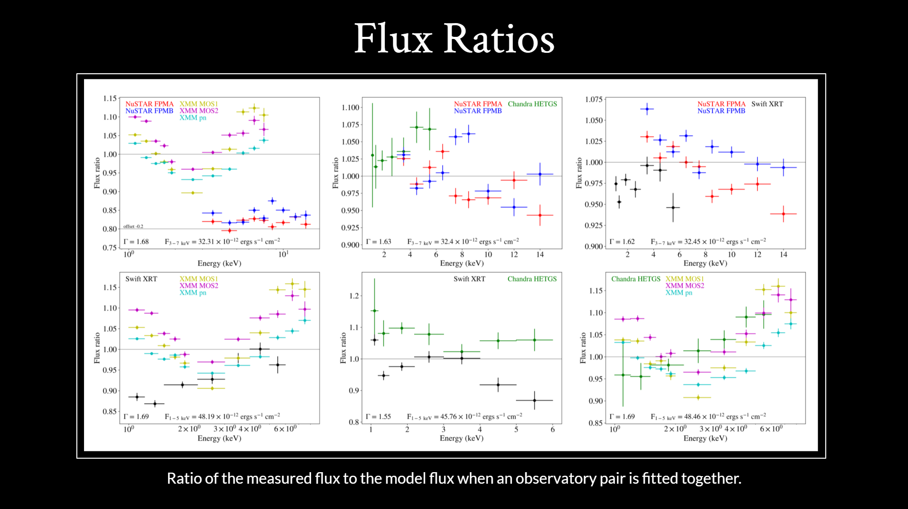
- These flux ratio plots from 2018 show the ratio of the measured flux to our
model flux when an observatory pair is fitted together. These give us an
idea of how good our fit was. Ideally, this ratio would be one at all energy
levels for all instruments.
- Many of these fits are close to a flux ratio of 1, which tells us that they
are good fits, such as Chandra and NuSTAR in the top middle or NuSTAR and
Swift in the top right.
- We see many of the trends in these plots repeated over all seven years of
data, which we can see in the next slide.
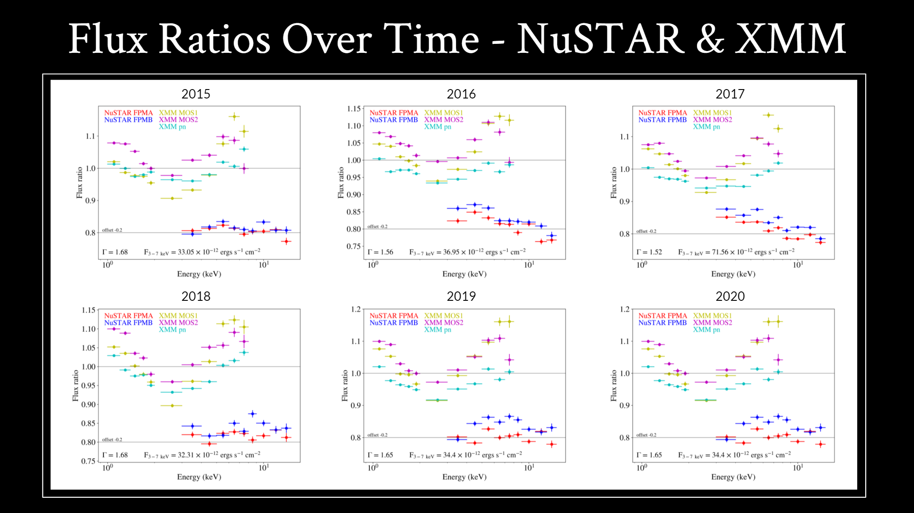
- Here are the flux ratio plots for just NuSTAR and XMM over time.
- The NuSTAR data has been offset by -0.2 to make the plots easier to read.
- These plots consistently show off a V in the XMM flux ratio, which is an
interesting trend, however this has been well-documented and is expected.
- The NuSTAR flux ratios are consistently scattered around a flux ratio of
1, which is also what we would expect, and it’s a sign of a good fit.
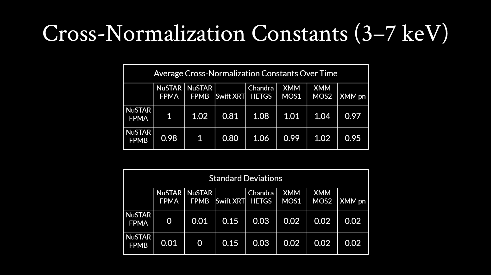
- Finally, here are the average cross-normalization constants and their standard
deviations across all seven years of data.
- These were calculated by comparing the flux of each instrument listed in
the columns to the flux of the NuSTAR instruments on the left.
- Here, we notice trends that can be expected, such as FPMB being slightly
higher than FPMA, the NuSTAR instruments being very similar to the XMM
MOS instruments, and XMM’s pn instrument measuring a lower flux than the
NuSTAR instruments.
- However, these tables strongly indicate that our Swift data needs to be
revisited because Swift has an uncharacteristically low cross-normalization
constant and high standard deviation.
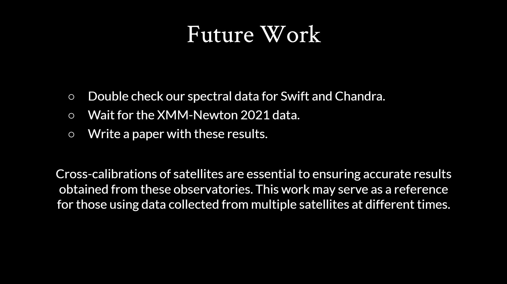
- In the future, we plan to double check our spectral data for Swift and
Chandra.
- These extractions were done by myself, so we
plan to check them with experts and to clean up the mistakes in the
Swift extractions and fit.
- We also plan to include the 2021 XMM data once that’s available.
- Lastly, we plan to publish a paper with these results!
- The main reason this work is so essential is because cross-calibrations
of satellites ensures accurate results can be obtained from these
observatories, which impacts many areas of X-ray astrophysics. So we
hope that this work can serve as a reference for those using data collected
from different satellites at different times to ensure that their
measurements are as accurate as possible.
- Thank you!